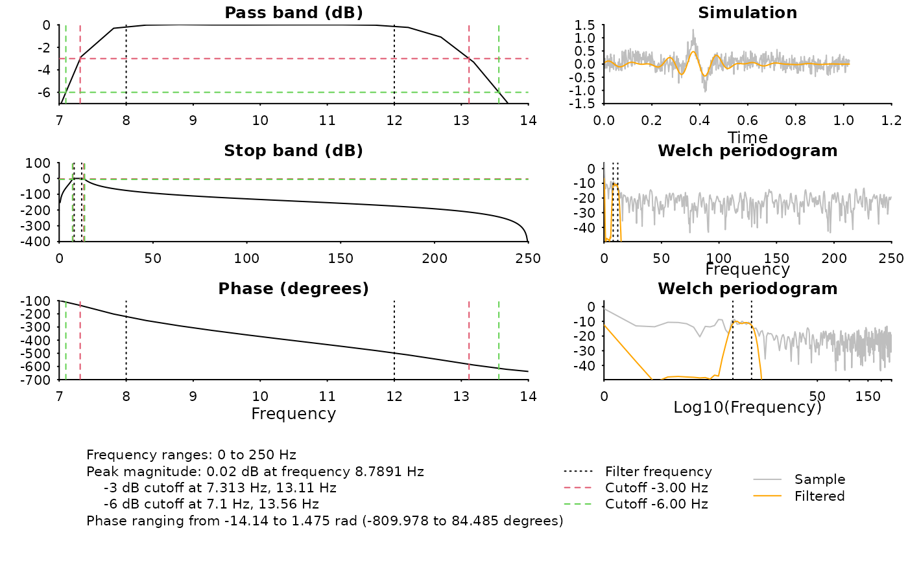

Design an 'IIR' filter
Usage
design_filter_iir(
family = c("butter", "cheby1", "cheby2", "ellip"),
sample_rate,
filter_order = NA,
high_pass_freq = NA,
high_pass_trans_freq = NA,
low_pass_freq = NA,
low_pass_trans_freq = NA,
peak_attenuation = NA,
trans_attenuation = NA
)Arguments
- family
filter family name, choices are
"butter","cheby1","cheby2", and"ellip"- sample_rate
sampling frequency
- filter_order
suggested filter order. Notice filters with higher orders may become numerically unstable, hence this number is only a suggested number. If the filter is unstable, this function will choose a lower order; leave this input
NA(default) if undecided.- high_pass_freq
high-pass frequency; default is
NA(no high-pass filter will be applied)- high_pass_trans_freq
high-pass frequency band-width; default is automatically inferred from filter type.
- low_pass_freq
low-pass frequency; default is
NA(no low-pass filter will be applied)- low_pass_trans_freq
low-pass frequency band-width; default is automatically inferred from filter type.
- peak_attenuation
expected power attenuation (in decibel) at high-pass low pass frequencies. For 'Butterworth' filters, we recommend set to
NAand let the algorithm estimate automatically; for all other filters, this is the allowable pass-band ripple, and default value is1dB.- trans_attenuation
power attenuation (in decibel) at transition frequency. For 'Butterworth' filters, default is
3dB (half power); For all other filters, this is the minimum attenuation in the stop band and default is12dB.
Examples
sample_rate <- 500
my_diagnose <- function(
filter, vlines = c(8, 12), cutoffs = c(-3, -6)) {
diagnose_filter(
b = filter$b,
a = filter$a,
fs = sample_rate,
vlines = vlines,
cutoffs = cutoffs
)
}
# ---- Default using butterworth to generate 8-12 bandpass filter ----
# Butterworth filter with cut-off frequency
# 7 ~ 13 (default transition bandwidth is 1Hz) at -3 dB
iir_generator <- design_filter_iir(
family = "butter",
low_pass_freq = 12,
high_pass_freq = 8,
sample_rate = 500
)
# magnitude decay is
# 8-12 Hz: around -0.2 dB
# 7-8 Hz and 12-13 Hz: -3 dB
filter <- iir_generator()
print(filter$check)
#> <RAVE filter quality test>
#> Attenuation:
#> Freq=0.032 xNyquist, mag=-0.0397 dB (expected=NA dB)
#> Freq=0.048 xNyquist, mag=-0.1961 dB (expected=NA dB)
#> Freq=0.028 xNyquist, mag=-2.996 dB (expected=3 dB)
#> Freq=0.052 xNyquist, mag=-3.001 dB (expected=3 dB)
#> Reciprocal condition number: 1.4e-15 > .Machine$double.eps
my_diagnose(filter)

## explicit bandwidths and attenuation (sharper transition)
# Butterworth filter with cut-off frequency
# 7.75 ~ 12.25 Hz, at -6 dB
iir_generator <- design_filter_iir(
family = "butter",
low_pass_freq = 12, low_pass_trans_freq = 0.25,
high_pass_freq = 8, high_pass_trans_freq = 0.25,
sample_rate = 500, trans_attenuation = 6
)
# magnitude decay is
# 8-12 Hz: around -3 dB
# 7-8 Hz and 12-13 Hz: -6 dB
filter <- iir_generator()
filter$check
#> <RAVE filter quality test>
#> Attenuation:
#> Freq=0.032 xNyquist, mag=-2.172 dB (expected=NA dB)
#> Freq=0.048 xNyquist, mag=-3.311 dB (expected=NA dB)
#> Freq=0.031 xNyquist, mag=-6.012 dB (expected=6 dB)
#> Freq=0.049 xNyquist, mag=-6.001 dB (expected=6 dB)
#> Reciprocal condition number: 1.6e-15 > .Machine$double.eps
my_diagnose(filter)
 # ---- cheby1 --------------------------------
# pass-band: 8-12 Hz with ripple 1 dB
# stop-band: 7-13 Hz with minimum power attenuation 12 dB (default)
filter <- design_filter_iir(
family = "cheby1",
low_pass_freq = 12,
high_pass_freq = 8,
sample_rate = 500
)()
my_diagnose(filter)
# ---- cheby1 --------------------------------
# pass-band: 8-12 Hz with ripple 1 dB
# stop-band: 7-13 Hz with minimum power attenuation 12 dB (default)
filter <- design_filter_iir(
family = "cheby1",
low_pass_freq = 12,
high_pass_freq = 8,
sample_rate = 500
)()
my_diagnose(filter)
 # ---- cheby2 --------------------------------
# pass-band: 8-12 Hz with ripple 1 dB
# stop-band: 7-13 Hz with minimum power attenuation 40 dB
filter <- design_filter_iir(
family = "cheby2",
low_pass_freq = 12,
high_pass_freq = 8,
trans_attenuation = 40,
sample_rate = 500
)()
my_diagnose(filter)
# ---- cheby2 --------------------------------
# pass-band: 8-12 Hz with ripple 1 dB
# stop-band: 7-13 Hz with minimum power attenuation 40 dB
filter <- design_filter_iir(
family = "cheby2",
low_pass_freq = 12,
high_pass_freq = 8,
trans_attenuation = 40,
sample_rate = 500
)()
my_diagnose(filter)
 # ----- ellip ---------------------------------
# pass-band: 8-12 Hz with ripple 1 dB
# stop-band: 7.75-12.25 Hz with minimum power attenuation 30 dB
filter <- design_filter_iir(
family = "ellip",
low_pass_freq = 12, low_pass_trans_freq = 0.25,
high_pass_freq = 8, high_pass_trans_freq = 0.25,
trans_attenuation = 30,
sample_rate = 500
)()
my_diagnose(filter)
# ----- ellip ---------------------------------
# pass-band: 8-12 Hz with ripple 1 dB
# stop-band: 7.75-12.25 Hz with minimum power attenuation 30 dB
filter <- design_filter_iir(
family = "ellip",
low_pass_freq = 12, low_pass_trans_freq = 0.25,
high_pass_freq = 8, high_pass_trans_freq = 0.25,
trans_attenuation = 30,
sample_rate = 500
)()
my_diagnose(filter)